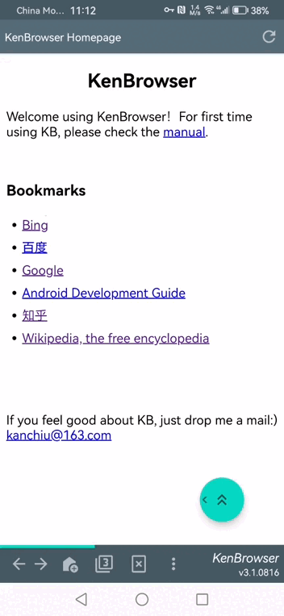
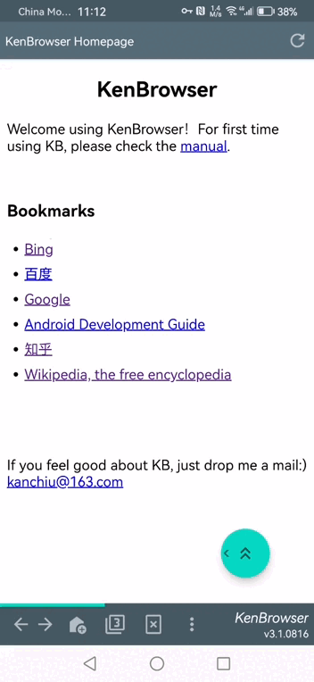

| Click: | Click the floating button, will scroll webpage up by 1/2 page. |
| Dbl-click: | Will trigger webpage auto-scrolling. Can adjust scroll speed with popup +- buttons. Click floating button again to stop. |
| Swipe: | Touch the button and swipe out of the button boundery, will trigger webpage swipe in 4 directions accordingly. |
| Lng-click: | Long-click button till a small vibrate, then drag the button and drop anywhere you want! |
 

| 1. | In your mobile's file management app, choose the js file, and share/send to KenBrowser. |
| 2. | In KenBrowser system menu, "Setup"-"Injected Javascript"-"Import JS", in the file pickup box choose the js file, click OK. |
| 1. | Long-click the plain text in webpage, till popup context menu. |
| 2. | Select "SelectText Mode" in popup menu. |
| 3. | Text select contextual menu will show, continue as usual practice. |
| Plain text: | Select text/word from other app, share to KB, will open the keyword search result in KB. |
| html file: | Can share/send a html file to KB, to open it in KB. |
| js file: | See javascript injecting |
| url in clipboard: | Copy an URL in other app, then enter KB, click the top title bar, will prompt to ask whether open URL. |
| Export: | Open KB homepage, long-click the page till popup menu, choose "Save & copy"-"Share HTML to", to share bookmark file to other text edit app. And you can edit bookmarks there. |
| Import: | Save the file after edit, and share/send to KB, KB will merge those bookmarks with existing ones. Can refresh page to see the result. |